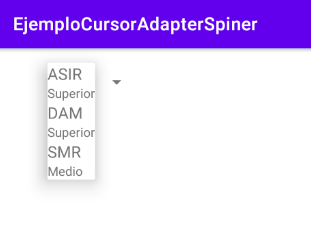
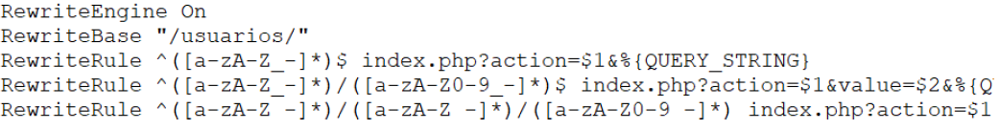
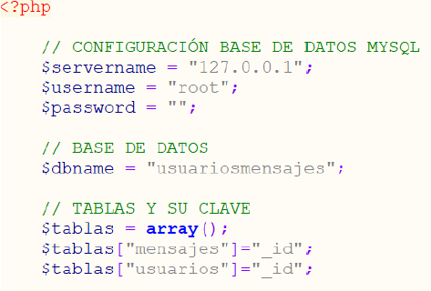

Apunts
Tema 11. Persistència de Dades I
Índex
- Accés a bases de dades locals. *SQLite
- Accés a bases de dades remotes
- Acceso a Base de Datos con FIREBASE
Accés a bases de dades locals. *SQLite
Introducció
La plataforma Android proporciona dues eines principals per a l'emmagatzematge i consulta de dades estructurades: la base de dades SQLite i Content Providers (ho treballarem en temes posteriors).
Ens centrarem en SQLite, encara que no entrarem ni en el disseny de BBDD relacionals ni en l'ús avançat de la BBDD. Per a conéixer tota la funcionalitat de SQLite es recomana usar la documentació oficial.
Per a l'accés a les bases de dades tindrem tres classes que hem de conéixer. La classe SQLiteOpenHelder, que encapsula totes les funcions de creació de la base de dades i versions d'aquesta. La classe SQLiteDatabase, que incorpora la gestió de taules i dades. I finalment la classe Cursor, que usarem per a moure'ns pel *recordset que ens retorna una consulta SELECT.
Creació i obertura de la BD
El mètode recomanat per a la creació de la base de dades és estendre la classe SQLiteOpenHelder i sobreescriure els mètodes onCreate i onUpgrade. El primer mètode s'utilitza per a crear la base de dades per primera vegada i el segon per a actualitzacions d'aquesta. Si la base de dades ja existeix i la seua versió actual coincideix amb la sol·licitada, es realitzarà la connexió a ella.
Per a executar la sentència SQL utilitzarem el mètode execSQL proporcionat per la API per a SQLite d'Android.
internal inner class BDClientes( context: Context?, name: String?, factory: CursorFactory?, version: Int) : SQLiteOpenHelper(context, name, factory, version) { var sentencia = "create table if not exists clientes" + "(dni VARCHAR PRIMARY KEY NOT NULL, nombre TEXT, apellidos TEXT);" override fun onCreate(sqLiteDatabase: SQLiteDatabase) { sqLiteDatabase.execSQL(sentencia) } override fun onUpgrade(sqLiteDatabase: SQLiteDatabase, i: Int, i2: Int) {} }
📌 Si la base de dades existeix però la seua versió actual és anterior a la sol·licitada, es dirà automàticament al mètode *onUgrde(). Si la base de dades no existeix es diu automàticament a onCreate().
Accés i modificació de les dades en la BD
Una vegada creada la classe, instanciarem un objecte del tipus creat i usarem un dels dos següents mètodes per a tindre accés a la gestió de dades: getWritableDatabase() per a accés d'escriptura i getReadableDatabase() per a accés de només lectura. En tots dos casos es retornarà un objecte de la classe SQLiteDatabase per a l'accés a les dades.
Per a realitzar una codificació neta i reutilitzable, el millor és crear una classe amb tots els mètodes que necessitem per a treballar amb la Base de dades, a més és útil tindre la classe derivada de SQLiteOpenHelper interna a aquesta.
class BDAdapter(context: Context?) { private var clientes: BDClientes init { clientes = BDClientes(context, "BDClientes", null, 1) } ... internal inner class BDClientes( context: Context?, name: String?, factory: CursorFactory?, version: Int) : SQLiteOpenHelper(context, name, factory, version) { var sentencia = "create table if not exists clientes" + "(dni VARCHAR PRIMARY KEY NOT NULL, nombre TEXT, apellidos TEXT);" override fun onCreate(sqLiteDatabase: SQLiteDatabase) { sqLiteDatabase.execSQL(sentencia) } override fun onUpgrade(sqLiteDatabase: SQLiteDatabase, i: Int, i2: Int) {} } }
📌 Com podem veure en el codi, creguem un objecte del tipus de BDClientes amb el qual treballarem cridant al constructor BDClientes(), a aquest mètode li passem el context, el nom de la BBDD, un objecte cursor (amb valor null) i la versió de la BD que necessitem.
Per a poder usar els mètodes creats en la classe, tan sols instanciaremos un objecte d'aquesta passant-li el context (de tipus activity). Amb aquesta instància podrem cridar a qualsevol dels mètodes que crearem en la classe d'utilitat.
var bdAdapter = BDAdapter(this) bdAdapter.insertarDatos()
Accés a la BD mitjançant sentències sql
L'accés a la BBDD es fa en dues fases, primer s'aconsegueix un objecte del tipus SQLiteDatabase i posteriorment usem les seues funcions per a gestionar les dades. Si hem obert correctament la base de dades llavors podrem començar amb les insercions, actualitzacions, esborrat, etc. No haurem d'oblidar tancar l'accés a la BD, sempre que no s'estiga usant un cursor.
Per exemple, inserirem 10 registres en la nostra taula clients. Per a això podrem crear un mètode en el BDAdapter semblant al següent:
fun insertarDatos() { var dbClientes =clientes.writableDatabase if (dbClientes != null) { for (i in 0..9) { val sentencia = "INSERT INTO Clientes (dni, nombre, apellidos) VALUES" + " ('" + i + "','nombre" + i + "','apellido" + i + "');" dbClientes.execSQL(sentencia) } dbClientes.close() } }
✋ Val, i ara què? On està la base de dades que acabem de crear? Com podem comprovar que tot ha anat bé i que els registres s'han inserit correctament?, en primer lloc vegem on s'ha creat la nostra base de dades. Totes les bases de dades SQLite creades per aplicacions Android s'emmagatzemen en la memòria del telèfon en un fitxer amb el mateix nom de la base de dades situat en una ruta que segueix el següent patró: /data/data/paquete.java.de.la.aplicacion/databases/nom_base_dades
En el cas del nostre exemple, la base de dades s'emmagatzemaria per tant en la ruta següent: /data/data/exemple.basedatos/databases/DBClientes
Per a comprovar que les dades s'han gravat podem accedir de manera remota a l'emulador a través de la seua consola de comandos (shell). Però és mes senzill obrir l'arxiu creat amb un bloc de notes i donar una ullada al seu contingut.
Accés a la BD mitjançant SQLiteDataBase
La API d'Android ens ofereix dos mètodes per a accedir a les dades. El primer d'ells ja ho hem vist, es tracta d'executar sentències SQL a través de execSql. Aquest mètode té com a paràmetre una cadena amb qualsevol instrucció SQL vàlida. L'altra forma és utilitzar els mètodes específics insert(), update() i delete() de la classe SQLiteDatabase.
Vegem a continuació cadascun d'aquests mètodes.
-
insert(): rep tres paràmetresinsert(table, nullColumnHack, values), el primer és el nom de la taula, el segon s'utilitza en cas que necessitem inserir valors nuls en la taula "nullColumnHack" en aquest cas el deixarem passar ja que no l'usarem i per tant el posem a *null i el tercer són els valors del registre a inserir. Els valors a inserir els passarem al seu torn com a elements d'una col·lecció de tipusContentValues. Aquests elements s'emmagatzemen com a parelles clau-valor, on la clau serà el nom de cada camp i el valor serà la dada que s'inserirà. -
update(): Pràcticament és igual que l'anterior mètode però amb l'excepció que ací estem usant el mètodeupdate(table, values, whereClause, whereArgs)per a actualitzar/modificar registres de la nostra taula. Aquest mètode ens demana el nom de la taula "table", els valors a modificar/actualitzar "values" (ContentValues), una condició WHERE "whereClause" que ens serveix per a indicar-li que valor volem que actualitze i com a últim paràmetre "whereArgs" podem passar-li els valors nous a inserir, en aquest cas no el necessitarem per tant el posem a null. -
delete(): el mètodedelete(table, whereClause, whereArgs)ens demana el nom de la taula "table", el registre a esborrar "whereClause" que prendrem com a referència la seua aneu i com a últim paràmetre "whereArgs" els valors a esborrar.


Els valors que hem deixat anteriorment com null són realment arguments que podem utilitzar en la sentència SQL. Vegem-ho amb un exemple:

On les ? indiquen els emplaçaments dels arguments.
✒️ Crea un exercici EjercicioResueltoBD en el qual proves el codi vist anteriorment: Creació de la BD, inserir elements amb SQL i modificar, eliminar i inserir mitjançant ContentValue.
Recuperació de dades amb rawQuery
Existeixen dues maneres de recuperar informació (SELECT de la base de dades), encara que ambdues es recolzen en el concepte de cursor, que és en definitiva l'objecte que recull els resultats de la consulta.Completarem l'exercici anterior, perquè ens permeta anar inserint registres en la BD i visualitzant-los en un listView.

fun seleccionarDatosSelect(sentencia: String?): Boolean { val listaCliente: ArrayList<Clientes>? val dbClientes = clientes.readableDatabase if (dbClientes != null) { val cursor: Cursor = dbClientes.rawQuery(sentencia, null) listaCliente = getClientes(cursor) dbClientes.close() return if (listaCliente == null) false else true } return false }
Evidentment, ara haurem de recórrer el cursor i visualitzar les dades retornades. Per a això es disposa dels mètodes moveToFirst(), moveToNext(), moveToLast(), moveToPrevius(), isFirst() i isLast().
Existeixen mètodes específics per a la recuperació de dades getXXX(indexe), on XXX indica el tipus de dada (String, Blob, Float,…) i el paràmetre índex permet recuperar la columna indicada en aquest, tenint en compte que comença en 0.
El mètode getClientes (implementat per nosaltres) és el que ens permet llegir les dades existents en la BD i portar-los al arrayList:
fun getClientes(cursor: Cursor): ArrayList<Clientes>? { val clientes: ArrayList<Clientes> var cliente: Clientes cursor.moveToFirst() if (!cursor.isAfterLast()) { clientes = ArrayList() while (!cursor.isAfterLast()) { cliente = Clientes(cursor.getString(0), cursor.getString(1), cursor.getString(2)) clientes.add(cliente) cursor.moveToNext() } return clientes } return null }
Recuperació de dades amb query
La segona manera de recuperar informació de la BD és utilitzar el mètode query(). Rep com a paràmetres el nom de la taula, un string amb els camps a recuperar, un string on especificar les condicions del WHERE, un altre per als arguments si n'hi haguera, un altre per al GROUP BY, un altre per a HAVING i finalment un altre per a ORDER BY.
fun seleccionarDatosCodigo( columnas: Array<String?>?, where: String?, valores: Array<String?>?, orderBy: String?): ArrayList<Clientes>? { var listaCliente: ArrayList<Clientes>? = ArrayList() val dbClientes = clientes.readableDatabase if (dbClientes != null) { val cursor: Cursor = dbClientes.query("clientes", columnas, where, valores, null, null, orderBy) listaCliente = getClientes(cursor) dbClientes.close() return listaCliente } return null }
On l'anomenada al mètode podria ser la següent:
val listaCliente = bdAdapter.seleccionarDatosCodigo( arrayOf("dni", "nombre", "apellidos"), null, null, "apellidos")
✒️Crea un exercici ejemploBD en el qual proves el codi vist anteriorment: Recuperació de les dades amb rawQuery i amb query. Per a això crea l'aplicació com en la imatge, de manera que amb un botó es guarde la informació en la BD i amb l'altre s'extraga i es mostre en una llista o en un recycler. Si utilitzareu una llista com es mostra en la imatge, debereis crear una classe adaptador com la de la següent imatge i associar-la a la llista amb el setAdapter:
binding.listView.setAdapter( AdaptadorClientes( this@MainActivity, R.layout.list_layout, listaCliente!! ))Clase Adaptador per a un ListView:
class AdaptadorClientes(var activitycontext: Activity, resource: Int, objects: ArrayList<Clientes> ) : ArrayAdapter<Any>(activitycontext, resource, objects as List<Any>) { var objects: ArrayList<Clientes> override fun getView(position: Int, convertView: View?, parent: ViewGroup): View { var vista: View?= convertView if (vista == null) { val inflater = activitycontext.layoutInflater vista = inflater.inflate(R.layout.list_layout, null) (vista?.findViewById(R.id.apellidolist) as TextView) .setText(objects[position].apellidos) (vista?.findViewById(R.id.nombrelist) as TextView) .setText(objects[position].nombre) (vista?.findViewById(R.id.dnilist) as TextView) .setText(objects[position].dni) } return vista } init { this.objects = objects } }
✒️ Exercici Propost Recórrer BD
Ús de SimpleCursorAdapter
S'utilitza per a mapear les columnes d'un cursor obert en una base de dades als diferents elements visuals continguts en el control de selecció. Així s'evita el bolcat de tots els elements descarregats de la BD a una col·lecció, amb l'estalvi de memòria que comporta.
Ens trobem amb dos casos: quan usem Spinner o ListView senzills l'adaptador que gestiona aquest bolcat ja està creat, si usem RecyclerView haurem de crear i gestionar l'adaptador.
Programarem un exemple per a practicar aquest concepte, serà una senzilla activitat amb un Spinner que mostrarà els cicles informàtics amb la categoria a la qual pertanyen:

|

|
Per a això ens creem la base de dades i inserim elements com ja hem vist fins al moment:
class DBAdapter(context: Context) { private var ohCategoria: OHCategoria init { ohCategoria = OHCategoria(context, "BBDCategorias", null, 1) } fun insertarDatosCodigo() { val sqLiteDatabase = ohCategoria.writableDatabase if (sqLiteDatabase != null) { val valores = ContentValues() valores.put("nombre", "ASIR") valores.put("cate", "Superior") valores.put("idcategoria", 1) sqLiteDatabase.insert("categoria", null, valores) valores.put("nombre", "DAM") valores.put("cate", "Superior") valores.put("idcategoria", 2) sqLiteDatabase.insert("categoria", null, valores) valores.put("nombre", "SMR") valores.put("cate", "Medio") valores.put("idcategoria", 3) sqLiteDatabase.insert("categoria", null, valores) sqLiteDatabase.close() } } fun leerDatos():Cursor? { val sqLiteDatabase = ohCategoria.readableDatabase if (sqLiteDatabase != null) { return sqLiteDatabase.rawQuery( "select idcategoria as _id, nombre, cate from categoria", null ) } return null } inner class OHCategoria( context: Context?, name: String?, factory: SQLiteDatabase.CursorFactory?, version: Int):QLiteOpenHelper(context, name, factory, version) { var cadena = "create table if not exists categoria(idcategoria INTEGER PRIMARY KEY NOT NULL, nombre TEXT, cate TEXT);" override fun onCreate(db: SQLiteDatabase) { db.execSQL(cadena) } override fun onUpgrade(db: SQLiteDatabase, oldVersion: Int, newVersion: Int) {} } }
Posteriorment passem a crear el cursorAdapter, però per a això usarem un Spinner per a mostrar la informació, ho incloem en el layout principal.
override fun onCreate(savedInstanceState: Bundle?) { super.onCreate(savedInstanceState) val from = arrayOf("nombre", "cate") val to = intArrayOf(R.id.ciclo, R.id.cate) setContentView(R.layout.activity_my) val dbAdapter=DBAdapter(this) dbAdapter.insertarDatosCodigo() val desplegable = findViewById<Spinner>(R.id.spinner) val cursor=dbAdapter.leerDatos() val mAdapter = SimpleCursorAdapter(this, R.layout.spinner_layout, cursor, from, to, 0x0) desplegable.setAdapter(mAdapter) }
📌 en la Línia 9 es retorna el cursor amb la selecció de les dades de la BD (compte!! no s'haurà de tancar el cursor). Línia 19 per al funcionament del
SimpleCursorAdapter, és necessari indicar en la seua definició els següents elements: el context, el layout sobre el qual es definirà la vista, el cursor que serà origen de les dades, llista amb el nom de les columnes que es vol enllaçar, una llista amb els aneu de les vistes on es mostraran els camps (l'ordre és important) i un flag (0 per defecte)
✒️ Prova l'aplicació de l'exemple anterior
Cursors amb RecyclerView
Com era d'esperar, no es pot aplicar directament un adaptador de tipus SimpleCursorAdapter a un tipus RecyclerView. Si volem aprofitar els beneficis dels cursors en els recyclers, haurem de fabricar-los a mesura. Els passos són els següents:
-
Crear una classe Abstracta base que derive de RecyclerView.Adapter i en la qual implementarem els mètodes sobreescrits derivats de RecyclerView.Adapter:
abstract class CursorRecyclerAdapter(cursor: Cursor) : RecyclerView.Adapter<RecyclerView.ViewHolder>() { var mCursor: Cursor override fun onBindViewHolder(holder: RecyclerView.ViewHolder, position: Int) { checkNotNull(mCursor) { "ERROR, cursos vacio" } check(mCursor.moveToPosition(position)) { "ERROR, no se puede" + " encontrar la posicion: $position" } onBindViewHolder(holder, mCursor) } abstract fun onBindViewHolder(holder: RecyclerView.ViewHolder, cursor: Cursor) override fun getItemCount(): Int { return if (mCursor != null) mCursor.getCount() else 0 } init { mCursor = cursor } }
📌 En heretar de
RecyclerView.Adaptercaldrà implementar els mètodesonBindViewHolder()al qual li arriba la posició de la línia del recycler que està activa en aqueix moment igetItemCount()que haurà de retornar els elements que té el cursor Línia 16, li arriba en el constructor. En el mètode onBindViewHolder es comprovarà que el cursor no està vacio i que es pot accedir a la posició que arriba com a paràmetre Línia 8, i en aqueix cas es dirà al mètodeonBindViewHolder(holder: RecyclerView.ViewHolder, cursor: Cursor)abstracte que hem de crear en aquesta classe Línia 12, però aquesta vegada amb unCursorcom a paràmetre. -
Ara haurem de crear la nostra classe RecyclerView derivada de l'anterior.
class RecyclerAdapter(c: Cursor) : CursorRecyclerAdapter(c) { override fun onCreateViewHolder(parent: ViewGroup, viewType: Int): RecyclerView.ViewHolder { val v: View = LayoutInflater.from(parent.context) .inflate(R.layout.recycler_layout, parent, false) return SimpleViewHolder(v) } override fun onBindViewHolder(holder: RecyclerView.ViewHolder, cursor: Cursor) { (holder as SimpleViewHolder).bind(cursor) } internal inner class SimpleViewHolder(itemView: View) : RecyclerView.ViewHolder(itemView) { var nombre: TextView var cate: TextView var imagen: ImageView fun bind(dato: Cursor) { nombre.setText(dato.getString(0)) cate.setText(dato.getString(1)) val theImage: Bitmap = MainActivity. convertirStringBitmap(dato.getString(3)) imagen.setImageBitmap(theImage) } init { nombre = itemView.findViewById(R.id.ciclo) cate = itemView.findViewById(R.id.cate) imagen = itemView.findViewById(R.id.imagen) as ImageView } } }
📌 A aquesta classe li arribarà el cursor pel constructor que al seu torn serà passat a la classe pare. En heretar de la classe abstracta, haurem d'implementar el seu mètode abstracte i serà ací on aprofitarem que el cursos s'ha posicionat en l'element correcte de la BD, per a cridar al mètode
bind(cursor)Línia 12 delHolder, amb aqueix estat del cursor. En elHoldertractarem els elements que traiem del cursos de manera correcta.

companion object { fun convertirStringBitmap(imagen: String?): Bitmap { val decodedString: ByteArray = Base64.decode(imagen, Base64.DEFAULT) return BitmapFactory.decodeByteArray(decodedString, 0, decodedString.size) } fun ConvertirImagenString(bitmap: Bitmap): String { val stream = ByteArrayOutputStream() bitmap.compress(Bitmap.CompressFormat.PNG, 90, stream) val byte_arr: ByteArray = stream.toByteArray() return Base64.encodeToString(byte_arr, Base64.DEFAULT) } }
✒️Proba la aplicació del exemple anterior
✒️ Exercici proposat cursor amb recycler
Accés a bases de dades remotes
Introducció
Per a obtindre i guardar informació d'una base de dades remota, és necessari connectar-se a un servidor on es trobarà la BBDD. L'esquema de funcionament el podem veure en la següent imatge:

En el servidor funcionen en realitat tres components bàsics:
-
Una base de dades, que emmagatzema tota la informació dels usuaris. Per a la BBDD es pot utilitzar MySQL, que és de llicència gratuïta.

- Un servlet, que atén la petició rebuda, la processa i envia la resposta corresponent. Un servlet no és més que un component Java, generalment xicotet i independent de la
plataforma. - Un servidor web , on resideix i s'executa el servlet , i que roman a l'espera de connexions HTTP entrants.
Els formats més utilitzats per a compartir informació mitjançant aquests serveis web són XML (i altres derivats) i JSON.
Què és JSON?
JSON ( JavaScript Objec t Notation ) és un format lleuger d'intercanvi de dades entre clients i servidors, basat en la sintaxi de JavaScript per a representar estructures en forma organitzada. És un format en text pla independent de tot llenguatge de programació, és més, suporta l'intercanvi de dades en gran varietat de llenguatges de programació com PHP Python C++ C# Java i Ruby.
XML també pot usar-se per a l'intercanvi, però pel fet que la seua definició genera un DOM , l'analitze es torna extens i pesat. A més d'això XML ha d'usar Xpath per a especificar rutes d'elements i atributs, per la qual cosa demora la reconstrucció de la petició. En canvi JSON no requereix restriccions addicionals, simplement s'obté el text pla i el engine de JavaScript en els navegadors fa el treball de parsing sense cap complicació.
Tipus de dades en JSON
Similar a l'estructuració de dades primitives i complexos en els llenguatges de programació, JSON estableix diversos tipus de dades: cadenes, números, booleans, arrays, objectes i valors null. El propòsit és crear objectes que continguen diversos atributs compostos com a parells clau valor. On la clau és un nom que identifique l'ús del valor que l'acompanya. Vegem un exemple:
{ "id": 101, "Nombre": "Carlos", "EstaActivo": true, "Notas": [2.3, 4.3, 5.0] }
L'anterior estructura és un objecte JSON compost per les dades d'un estudiant. Els objectes JSON contenen els seus atributs entre claus {}, igual que un bloc de codi en JavaScript, on cada atribut ha d'anar separat per coma , per a diferenciar cada parell.
La sintaxi dels parells ha de contindre dos punts : per a dividir la clau del valor. El nom del parell ha de tractar-se com a cadena i afegir-li cometes dobles.
Si notes, aquest exemple porta un exemple de cada tipus de dada:
-
El id és de tipus sencer, ja que conté un número que representa el codi de l'estudiant.
-
El Nom és un string. Usa cometes dobles per a identificar-les.
-
EstaActivo és un tipus booleà que representa si l'estudiant es troba en la institució educativa o no. Usa les paraules reservades true i false per a declarar el valor.
-
Notes és un arranjament de nombres reals. El conjunt dels seus elements has d'incloure'ls dins de claudàtors
[ ]i separar-los per coma.
La idea és crear un mecanisme que permeta rebre la informació que conté la base de dades externa en format JSON cap a l'aplicació. Amb això s'analitzarà cada element i serà interpretat en forma d'objecte Java per a integrar correctament l'aspecte en la interfície d'usuari.
La classe JsonObject de la llibreria org.json.JSONObject, pot interpretar dades amb format JSON i analitzar-los a objectes Java o al revés.
Vegem una il·lustració que mostra el procés d'analitze que serà estudiat:

- Com pots observar l'origen de les dades és un servidor extern o hosting que hages contractat com a proveïdor per als teus serveis web. L'aplicació web que realitza la gestió d'encriptació de les dades a format
JSONpot serPHP,JavaScript,ASP.NET, etc.. - La teua aplicació Android a través d'un client realitza una petició a la direcció URL del recurs amb la finalitat d'obtindre les dades. Aqueix flux entrant ha d'interpretar-se amb ajuda d'un parser personalitzat que implementaren les classes que s'utilitzen per a treballar amb
JSON. - El resultat final és un conjunt de dades adaptable al
APId'Android. Depenent de les teues necessitats, pots convertir-los en una llista d'objectes estructurats que alimenten un adaptador que poble un ListView o simplement actualitzar la base de dades local de la teua aplicació enSQLite.
Accés a bases de dades amb Apirest i Retrofit
Retrofit és un client REST per a Android i Java, desenvolupat per Square, molt simple i fàcil d'aprendre. Permet fer peticions GET, POST, PUT, PATCH, DELETE i HEAD; gestionar diferents tipus de paràmetres i analitzar automàticament la resposta a un POJO (Plain Old Java Object). Utilitzarem aquesta llibreria per la seua facilitat de maneig.
Definició del Servei Rest
Com és de suposar, per a poder accedir a un servei Rest des d'una de les nostres aplicacions, aquest ha d'haver sigut creat amb anterioritat i allotjat en un Hosting adequat.
La part de creació ja siga amb PHP, Java, o qualsevol dels altres llenguatges que ho permeten no correspon a la nostra assignatura, per la qual cosa la passarem per alt i usarem un ApiRest general que s'ha proporcionat en el mòdul d'Accés a Dades i que amb unes xicotetes modificacions és valgut per a la majoria de casos. La carpeta amb el *ApiRest està composta dels següents arxius:

La configuració del nostre *API consta de dos arxius:
.htaccessEn aquest arxiu es configuren les regles d'accés, sobre una ruta que li indiquem en RewriteBase (ací és on haurem d'afegir la carpeta en la qual haurem allotjat nostra API, començant i acabant amb/).apirest_variables.php, en aquest arxiu es defineixen les dades de connexió a la base de dades. s'indiquen les taules que té aquesta i el nom de l'identificador de cadascuna d'elles.
|
.htaccess

|
apirest_variables.php

|
La resta d'arxius del ApiREst no hauran de modificar-se, ja que està construïda de manera genèrica amb les necessitats més comunes per a aquests casos. Haurem de crear la BD i allotjar el ApiRest de manera local o en el núvol, usant els coneixements que es tenen del mòdul d'Accés a Dades.
Suposarem un exemple molt senzill d'una base de dades Usuaris en el qual tindrem solament una taula Usuaris amb dos camps de tipus String (nick i nom). La BD l'haurem construïda en el servidor amb antelació (en aquest cas amb taula usarios de tres camps, nick i nom de tipus cadena i _aneu de tipus numèric autoincrementable com a clau). També crearem una aplicació amb dos camps de text que ens permeta inserir les dades de l'usuari i un botó flotant d'afegir, com es veu en la imatge següent:

Consum d'un Servei Rest des d'Android
Existeixen diferents llibreries que ens permetrien consumir els serveis des de l'App d'Android, però donada la seua facilitat utilitzarem les llibreries: Retrofit2 i Gson.
Retrofit la utilitzarem per a fer peticions i processar les respostes del APIRest, mentre que amb Gson transformarem les dades de JSON als propis que utilitze l'aplicació.
Per a això afegirem les següents línies en el build.gradle de l'app, i no oblides incloure permisos d'internet:
implementation "com.squareup.retrofit2:converter-gson:2.9.0" implementation 'com.squareup.retrofit2:retrofit:2.9.0'
Podem dir que els passos a seguir seran els següents:
- Creació d'un builder de Retrofit. Per a poder utilitzar Retrofit necessites crear un builder que et servirà per a comunicar-te amb la API triada. En la imatge s'ha utilitzat un mètode per a encapsular el codi, encara que no és necessari.
private fun crearRetrofit(): ProveedorSersvicio { //val url = "http://10.0.2.2/usuarios/" //para el AVD de android val url="http://xusa.iesdoctorbalmis.info/usuarios/" //para servidor del instituto val retrofit = Retrofit.Builder() .baseUrl(url) .addConverterFactory(GsonConverterFactory.create()) .build() return retrofit.create(ProveedorSersvicio::class.java) }
Si et fixes en la segona línia veuràs que cal escriure la url base de la API a la qual faràs les peticions. L'obtens de la documentació proporcionada pel creador de la API.
En la següent línia cal indicar la manera de convertir els objectes de la API als de la teua aplicació i viceversa, ací és on específiques que utilitzaràs Gson.
Aquest builder ho necessitaràs per a fer les anomenades a la API, així que procura que siga accessible.
-
Creació de les classes Pojo que li servirà al Gson per a analitzar els resultats. Però primer necessites conéixer l'estructura del Json que et retornarà la API, ja que no hi ha un patró establit. Per a conéixer l'estructura prèviament, es pot utilitzar PostMan i realitzar les diferents peticions (GET, POST, PUT, etc) des d'aquest.
Existeixen aplicacions o webs que faciliten la creació de la classe Pojo a partir d'un JSon, com per exemple: [http://www.jsonschema2pojo.org/]class RespuestaJSon { var respuesta = 0 var metodo: String? = null var tabla: String? = null var mensaje: String? = null var sqlQuery: String? = null var sqlError: String? = null }
Després has de crear l'estructura de classes per a emmagatzemar la informació que et resulte útil. Classe Usuari en aquest exemple.
class Usuarios(var nick: String, var nombre: String, var _id: Int =0)
-
Un altre element imprescindible, és la gestió dels serveis que es vulguen utilitzar. Per a cadascun d'ells s'haurà de fer una petició a la API. Necessitarem crear una interfície amb tots els serveis que vulgues utilitzar. Ací tens uns exemples:
interface ProveedorSersvicio { @GET("usuarios") @Headers("Accept: application/json", "Content-Type: application/json") suspend fun usuarios(): Response<List<Usuarios>> @GET("mensajes") @Headers("Accept: application/json", "Content-Type: application/json") suspend fun mensajes():Response<List<Mensaje>> @GET("mensajes/{nick}") @Headers("Accept: application/json", "Content-Type: application/json") suspend fun getUsuario(@Path("nick") nick: String): Response<List<Usuarios>> @POST("usuarios") @Headers("Accept: application/json", "Content-Type: application/json") suspend fun insertarUsuario(@Body usuarios: Usuarios): Response<RespuestaJSon> @POST("mensajes") @Headers("Accept: application/json", "Content-Type: application/json") suspend fun insertarMensaje(@Body mensaje: Mensaje): Response<RespuestaJSon> }
En el codi de dalt hi ha dos serveis dos són de tipus GET sense paraula clau i que serviran per a obtindre tots els usuaris i tots els missatges. Després es té un altre servei GET amb paraula clau (Nick) que servirà per a seleccionar els missatges d'un determinat Nick. I després dos POST als quals se'ls passa en el Bodi les dades a afegir.
Usant Corrutinas es realitzarà l'anomenada a la API, per la qual cosa els mètodes de la interfície han de ser de tipus suspend. En cada mètode s'indica el tipus de dada que espera obtindre, en aquests exemples la resposta pot ser o una llista del tipus d'objecte de la petició o un tipus *RespuestaJSon, que tindrà tots els possibles membres que ens podria donar alguna de les crides invocades.
Les paraules seguides del símbol @ donen funcionalitat als serveis, fent-los dinàmics i reutilitzables, per a més informació [http://square.github.io/retrofit/]
💡 Les que gestiona Retrofit per a invocar la url de la petició són
@GET, @POST, @PUT i @DELETE. El paràmetre correspondrà amb la url de la petició.
En el builder de Retrofit s'inclou la url base del api acabada amb/, que unida amb el paràmetre del servei crearan la url completa de la petició:
@GET -> http://10.0.2.2/usuaris/usuari
@Header i @Headers. S'usen per a especificar els valors que van en la secció header de la petició, com per exemple en què format seran enviats i rebuts les dades.@Path. Serveix per a incloure un identificador en la url de la petició, per a obtindre informació sobre una cosa específica. L'atribut en el mètode de crida que siga precedit per @Path, substituirà a l'identificador entre claus de la ruta que tinga el mateix nom.@Fields. Ens permet passar variables bàsiques en les peticions Post i Put.@Bodi. És equivalent a Fields però per a variables objecte.@*Query. S'usa quan la petició necessitarà paràmetres (els valors que van després del?en una url).
- Demanar dades a la Api seria l'últim passe a realitzar. Retrofit ens dona l'opció de realitzar-ho de manera síncrona o asíncrona. Aprofitarem els nostres coneixements de *corrutinas per a llançar la petició en segon pla de manera senzilla.
private fun anyadirUsuario(usuarios: Usuarios) { val context=this var salida:String? val proveedorServicios: ProveedorSersvicio = crearRetrofit() CoroutineScope(Dispatchers.IO).launch { val response = proveedorServicios.insertarUsuario(usuarios) if (response.isSuccessful) { val usuariosResponse = response.body() if (usuariosResponse != null) salida=usuariosResponse.mensaje else salida=response.message() } else { Log.e("Error", response.errorBody().toString()) salida=response.errorBody().toString() } withContext(Dispatchers.Main) { Toast.makeText(context, salida, Toast.LENGTH_LONG).show() if (espera != null) espera?.hide() limpiaControl()} } }
📌 Línia 4 cridem al mètode crearRetrofit, que és el que ens retorna un proveïdor de serveis del tipus de interface que hem creat i ens enllaçarà amb la url del servidor i amb el GSon. Línia 5 - 13 es llança la corrutina amb la petició desitjada, quan s'obtinga resposta es filtra per a veure si ha sigut correcta i recuperar les dades necessàries,
response.bodi(), en cas contrari es llança missatge d'error.
✒️EjercicioPropuestoBDExternas
✒️EjercicioPropuestoAgenda
Acceso a Base de Datos con FIREBASE
Firebase es una plataforma de backend para construir aplicaciones móviles y web, se encarga del manejo de la infraestructura permitiendo que el desarrollador se enfoque en otros aspectos de la aplicación. Entre sus características se incluye base de datos de tiempo real, autenticación de usuarios y almacenamiento (hosting) estático. La idea de usar Firebase es no tener que escribir código del lado del servidor y aprovechar al máximo las características que nos provee la plataforma. Para utilizar Firebase con Android disponemos de un SDK, lo que nos permitirá integrarlo fácilmente a nuestra aplicación. Para este ejemplo vamos a construir un listado de cosas por hacer usando la base de datos de tiempo real de Firebase como backend y autenticación con email/password.
Creant un app de Firebase
El primer pas és associar el nostre compte de Firebase a una dels nostres comptes de correu electrònic:

Una vegada està llesta veurem la pantalla on és possible visualitzar els nostres projectes o crear nous.

| Per a crear un nou projecte solament haurem d'introduir un nom i l'organització o carpeta principal del projecte. Google ens demanarà si volem habilitar Google Analytics en el projecte, el deixarem habilitat. |

|

I ho associarem al compte per defecte. Una vegada realitzats aquests passos, es crearà el projecte de firebase.
Posteriorment ens apareixerà la pantalla que ens permetrà afegir l'aplicació al nostre projecte Cada projecte estarà associat a una o més aplicacions, per la qual cosa abans de crear el projecte necessitarem crear l'aplicació o decidir l'espai de noms d'aquesta.
Crearem una aplicació senzilla amb el següent aspecte, que ens permeta entendre el funcionament d'accés a Firebase per a enviar i rebre dades sense autenticació.

Quan l'usuari meta la informació en els TextView i prema el botó afegir, la informació es guarda en Firebase i quan es modifique aquesta des de Firebase, es mostrarà un missatge amb el text modificat en el Txt de l'aplicació.

Una vegada tinguem l'espai de nom, podrem seguir amb els passos que ens demana Firebase per a crear l'aplicació. En el nostre cas no serà necessari introduir la signatura de certificació.

Just en el moment que acaba de crear-se l'aplicació, es descarregara un arxiu JSON que haurem de copiar en el nostre projecte Android. Només haurem de seguir les instruccions que proporciona molt clarament la pàgina Web de Firebase (copiar l'arxiu i afegir les línies que indiquen que usarem serveis de google en els build.gradle de l'app i del projecte).
-
En el projecte
dependencies { classpath "com.android.tools.build:gradle:7.0.3" classpath "com.google.gms:google-services:4.3.10" //añadir esta línea ... }
-
En la APP
plugins { id 'com.android.application' id 'kotlin-android' id 'com.google.gms.google-services' // Google Services plugin } dependencies { ... implementation 'androidx.appcompat:appcompat:1.3.1' //añadir las siguientes dos líneas implementation platform('com.google.firebase:firebase-bom:28.4.1') implementation 'com.google.firebase:firebase-analytics' ... }
La dependència de firebase bom permetrà evitar afegir la versió a la resta de dependències de Firebase que incloguem en el nostre projecte, facilitant molt el treball.
Molt important no oblidar afegir en el SDK, el servei de Google Play

En la manera consola podrem accedir a tots els nostres projectes, i podem comprovar l'aplicació o aplicacions afegides sobre un projecte (podem afegir més d'una).


Totes les aplicacions per defecte es troben en manera desenvolupe i sota el pla gratis que suporta fins a 100 connexions concurrents, 1GB d'emmagatzematge i 10GB de transferència en el backend. Després de creada l'app ens dirigim a veure els seus detalls, podem entrar en diverses pestanyes que ens permetran treballar amb l'APP, però a nosaltres ens interessa la BD. Firebase ofereix dues solucions de bases de dades en el núvol i accessibles per als clients que admeten sincronització en temps real:
Firestore DataBasea vegades també nomenada Cloud Firestores, és la base de dades més recent de Firebase. Aprofita el millor de Realtime Database amb un model de dades nou, permet consultes més riques i ràpides, i l'escalament s'ajusta a un nivell més alt que Realtime Database.Realtime Databaseés la base de dades original de Firebase. És una solució eficient i de baixa latència destinada a les apps per a dispositius mòbils que necessiten estats sincronitzats entre els clients en temps real. És similar a l'anterior en el seu ús, per la qual cosa no l'explicarem.

Firestore DataBase
Base de dades NoSQL flexible, escalable i en el núvol a fi d'emmagatzemar i sincronitzar dades per a la programació en el costat del client i del servidor. Igual que Firebase Realtime Database manté les dades sincronitzades entre apps client a través d'agents d'escolta en temps real. El model de dades de Firebase Firestore DataBase admet estructures de dades flexibles i jeràrquiques. Emmagatzema les dades en documents organitzats en col·leccions, els documents poden contindre objectes niats complexos, a més de subcolecciones. Està optimitzada per a emmagatzemar grans col·leccions de documents xicotets. El model de dades està format per documents, cada document conté un conjunt de parells clau-valor. Tots els documents s'han d'emmagatzemar en col·leccions, els documents poden contindre subcolecciones i objectes niats, i tots dos poden incloure camps primitius com strings o tipus d'objectes complexos com a llistes. Les col·leccions i els documents es creen de manera implícita en Firestore DataBase. Només has d'assignar dades a un document dins d'una col·lecció. Si la col·lecció o el document no existeixen, Firestore DataBase els crea. Cada document està identificat per una clau única, que pot generar-se automàticament o que es pot afegir alhora que el document:

Són molt similars a JSON, de fet, bàsicament són JSON. Existeixen algunes diferències, per exemple: els documents admeten tipus de dades addicionals i la seua grandària es limita a 1 MB, però en general, pots tractar els documents com a registres JSON lleugers. Els documents viuen en col·leccions, que simplement són contenidors de documents. Per exemple, podries tindre una col·lecció anomenada users amb els diferents usuaris de la teua app, en la qual hi haja un document que represente a cadascun:

Usant l'exercici del qual hem creat el layout d'inici, afegirem el codi necessari perquè ens permeta interactuar amb Firebase. L'aplicació guardarà usuaris amb contrasenya en la base de dades amb Firebase Cloud Firestone i a més permetrà l'autenticació amb Firebase Auth.
En el projecte de Firebase que acabem de crear, afegirem una base de dades Firestore DataBase.

Haurem de seleccionar la ubicació de la nostra Base de dades, podem seleccionar ZURIC(europe-west6). Un element important i que encara no hem esmentat, són la Regles. La Firebase Cloud Firestore proporciona un llenguatge de regles flexibles basades en expressions i sintaxi similar a la de JavaScript https://firebase.google.com/docs/firestore/security/get-started?authuser=0, que permet definir fàcilment la manera en què les teues dades han d'estructurar-se i indexar-se, i el moment en què poden sotmetre's a lectura i escriptura. Aquestes regles les podrem configurar desde la pestanya RULES de la nostra BD,

Per defecte vindrien configurades per a manera producció, encara que per a iniciar-se podem seleccionar manera de prova (dura 30 dies).


Si ens haguérem confós o volguérem canviar les regles, caldria canviar el seu valor i sobretot No oblidar Publicar.
Abans de començar amb el codi d'accés a la BD, haurem d'afegir la dependència que ens permetrà fer-ho:
implementation 'com.google.firebase:firebase-firestore'
Per a referenciar a la nostra base de dades solament haurem de crear un objecte de tipus FirebaseFirestore. L'arxiu que descarreguem en enllaçar l'app amb el projecte, és el que s'encarrega de tot el treball intern per a la connexió:
val firebaseFirestore = FirebaseFirestore.getInstance()
Per a fer referència a una col·lecció existent o afegir-la en cas de no existir, utilitzarem el mètode collection amb el nom de la col·lecció com a argument.
firebaseFirestore.collection("Usuarios")
Aquest mètode retorna una referència a la col·lecció seleccionada, i amb ell podrem afegir nous elements a ella (la col·lecció es crearà en afegir el primer document, en cas d'haver sigut creada anteriorment farà la referència solament).
Per a afegir un objecte (document) a la col·lecció ho podrem fer de dues maneres:
-
Deixant que la plataforma genere una clau aleatória, per a això utilitzarem el mètode add.
firebaseFirestore.collection("Usuarios").add(Usuario("Pepe", "correo@gmail.com"))

-
Afegint nosaltres la clau, aquesta ha de ser única perquè l'usuari s'afija.
firebaseFirestore.collection("Usuarios").document(usuario.correo).set(usuario)

Per a inserir el valor del nou fill hem utilitzat un objecte de la classe Pojo Usuari, que ens haurem creat amb anterioritat, Firestore converteix automàticament els atributs amb els seus valors per a poder guardar-los correctament. Cura haurem de tindre els atributs públics o usar getter i setter.
class Usuario : Serializable { lateinit var usuario: String lateinit var correo: String constructor() {} constructor(usuario: String, correo: String) { this.usuario = usuario this.correo = correo } }
El codi complet per a crear l'aplicació que ens afegirà un usuari cada vegada que premem el botó afegir, de manera que l'aneu de l'usuari siga el correu, serà el següent:
class MainActivity : AppCompatActivity() { lateinit var firebaseFirestore: FirebaseFirestore var listenerRegistration: ListenerRegistration? = null override fun onCreate(savedInstanceState: Bundle?) { super.onCreate(savedInstanceState) setContentView(R.layout.activity_main) firebaseFirestore = FirebaseFirestore.getInstance() val usuarioET = findViewById<TextInputLayout>(R.id.usuario) val correoET = findViewById<TextInputLayout>(R.id.correo) val añadir = findViewById<Button>(R.id.anyadir) val salida = findViewById<TextView>(R.id.salida) añadir.setOnClickListener{ val usuario = Usuario(usuarioET.editText?.text.toString(), correoET.editText?.text.toString()) firebaseFirestore.collection("Usuarios") .document(usuario.correo) .set(usuario) .addOnSuccessListener { Toast.makeText( this, "Usuario Añadido", Toast.LENGTH_SHORT ).show()} .addOnFailureListener { e -> Toast.makeText( this, "Error" + e.message, Toast.LENGTH_SHORT ).show()} } } }
📌 com es pot veuen en el codi del OnClick, afegim l'usuari recollit dels EditText creant com a clau el correu, com s'ha explicat anteriorment en el tema.A més als mètodes d'afegir objecte (set o add) se li poden assignaran diferents escuchadores per a comprovar l'estat del procés. Línia 19 i 25.
Per a buscar un document en Cloud Firestore, existeixen diferents possibilitats basades en la clausula Where. Per exemple, si quisieramos comprovar si l'aneu de l'usuari no està repetit i només en aqueix cas afegir-lo, podríem modificar l'anterior codi de la següent manera:
fun compruebaSiExisteyAnayade(usuario: Usuario) { firebaseFirestore.collection("Usuarios") .whereEqualTo(FieldPath.documentId(), usuario.correo).get() .addOnCompleteListener(OnCompleteListener<QuerySnapshot?> { task -> if (task.isSuccessful) { if (task.result?.size() == 0) anyadeUsuario(usuario) else Toast.makeText( this, "El correo ya existe, introduce uno nuevo", Toast.LENGTH_LONG ).show() } else { Toast.makeText(this, task.exception.toString(), Toast.LENGTH_LONG) .show() } }) } fun anyadeUsuario(usuario: Usuario) { firebaseFirestore.collection("Usuarios") .document(usuario.correo).set(usuario) .addOnSuccessListener { Toast.makeText( this, "Usuario Añadido", Toast.LENGTH_SHORT ).show() }.addOnFailureListener { e -> Toast.makeText( this, "Error" + e.message, Toast.LENGTH_SHORT ).show() } }
Si quisieramos donar funcionalitat al botó Eliminar, podem fer alguna cosa semblança al següent. En aquest cas s'està eliminant per nom d'usuari, així que en el cas d'existir més d'un document amb el mateix nom, s'eliminaran tots.
fun Elimina(usuario: Usuario) { firebaseFirestore.collection("Usuarios") .whereEqualTo("usuario", usuario.usuario) .get() .addOnCompleteListener { task -> for (documento in task.result!!) documento.reference.delete() } }
Si el que volem és controlar els canvis que ocorren en la BD, siga a través d'una aplicació o directament des de la consola de Firebase, haurem de registrar un listener del tipus ListenerRegistration, que s'inicialitzarà sobre la consulta que desitgem amb addSnapshotListener. En el següent exemple posem a escoltar tots els documents de la col·lecció Usuaris, mostrant en el TextView (que està sota els botons) el resultat de qualsevol modificació en qualsevol document de la col·lecció.
fun listarUsuarios() { val query = firebaseFirestore.collection("Usuarios") listenerRegistration = query.addSnapshotListener {value, error-> if (error == null) { for (dc in value!!.documentChanges) { when (dc.type) { DocumentChange.Type.ADDED -> salida.text = "${salida.text}\nSe ha añadido:"+ "${dc.document.data}\n".trimIndent() DocumentChange.Type.MODIFIED -> salida.text = "${salida.text}\n Se ha modificado:"+ "${dc.document.data}\n".trimIndent() DocumentChange.Type.REMOVED -> salida.text = "${salida.text}\nSe ha eliminado:"+ "${dc.document.data}\n".trimIndent() } } } else Toast.makeText(this, "No se puede listar"+error, Toast.LENGTH_SHORT).show() } }
Es pot realitzar la consulta sobre qualsevol element de la col·lecció després d'haver sigut seleccionat, de la següent manera:
query.whereEqualTo("correo", "manuel@gamil.com").addSnapshotListener{...}
⚠️ Un altre tema important a tindre en compte, és que la subscripció a una referència d'una base de dades de Firebase, és a dir, el fet d'assignar un listener a una ubicació de l'arbre per a estar al corrent dels seus canvis no és una cosa gratuïta des del punt de vista de consum de recursos. Per tant, és recomanable eliminar aqueixa subscripció quan ja no la necessitem. Per a fer això n'hi ha prou amb cridar al mètode
remove()del listener registrat, quan no desitgem continuar escoltant.override fun onDestroy() { super.onDestroy() listenerRegistration!!.remove() }
FirebaseUI y RecyclerView
FirebaseUI ens permet associar fàcilment a un control ListView o RecyclerView, una referència a una llista d'elements d'una base de dades Firebase. D'aquesta manera, el control s'actualitzarà automàticament cada vegada que es produïsca qualsevol canvi en la llista, sense haver de gestionar manualment per part nostra els esdeveniments de la llista, ni haver d'emmagatzemar en una estructura paral·lela la informació, ni haver de construir gran part dels adaptadors necessaris… en resum, estalviant moltes línies de codi i evitant molts possibles errors. Per a utilitzar FirebaseUI el primer que haurem de fer serà afegir la referència a la llibreria en el fitxer build.gradle del nostre mòdul principal. Cal tindre en compte que cada versió de FirebaseUI és compatible únicament amb una versió concreta de *Firebase, per la qual cosa hem d'assegurar que les versions utilitzades de totes dues llibreries són coherents. En la pàgina de FirebaseUI teniu disponible la taula de compatibilitats entre versions. En el moment d'actualització d'aquestes anotacions:
implementation 'com.firebaseui:firebase-ui-firestore:8.0.0'
Aquesta llibreria ens proveeix d'una Adaptador derivat de RecyclerView.ViewAdapter que gestionarà automàticament la càrrega de les dades que li passem com a referència en la vista assignada pel Holder, per a això el primer que haurem de crear és el ViewHolder personalitzat que gestione les dades de les nostres aplicació (reprenem l'exemple i implementem el botó llistar, podem crear un fragment o activity per a mostrar).
class Adaptador(options: FirestoreRecyclerOptions<Usuario>) : FirestoreRecyclerAdapter<Usuario, Adaptador.Holder>(options), View.OnClickListener { private var listener: View.OnClickListener? = null override fun onBindViewHolder(holder: Holder, position: Int, model: Usuario) { holder.bind(model) } override fun onCreateViewHolder(parent: ViewGroup, viewType: Int): Holder { val view: View = LayoutInflater.from(parent.context) .inflate(R.layout.linea_recycler, parent, false) view.setOnClickListener(this) return Holder(view) } fun onClickListener(listener: View.OnClickListener?) { this.listener = listener } override fun onClick(v: View?) { listener?.onClick(v) } inner class Holder(v: View) : RecyclerView.ViewHolder(v) { private val usuario: TextView private val correo: TextView fun bind(item: Usuario) { usuario.text = item.usuario correo.text = item.correo } init { usuario = v.findViewById(R.id.usuario) correo = v.findViewById(R.id.correo) } } }
📌 Definim un adaptador com ja hem fet anteriorment, amb el Holder per a controlar les vistes de les línies del recycler Línia 22 a 28, on sobreescriuríem, obligatòriament, els dos mètodes i el constructor. He implementaríem els listener necessaris per al funcionament dels esdeveniments. La principal diferència és que l'Adaptador hereta de la classe
FirestoreRecyclerAdapter. FirebaseUI ens facilita el llistat dels elements extrets de la BD proporcionant aquesta libreria. A aquesta classe li hem d'indicar que els elements usats són: el ViewHolder personalitzat que acabem de crear i la classe java que utilitzem per a encapsular la informació de cada element de la llistaFirestoreRecyclerAdapter<Usuari, Adaptador.Holder>.
En crear un objecte d'aquesta classe, hem de passar-li un objecte de la mateixa llibreria, de tipusFirestoreRecyclerOptions.
val firestoreRecyclerOptions = FirestoreRecyclerOptions.Builder<Usuario>() .setQuery(query, Usuario::class.java).build()
Al qual hem de passar-li la següent informació:
- L'objecte classe del nostre Item (Usuari.class)
- La referència al node de la base de dades que conté la llista d'elements que volem mostrar en el control.
Ara només quedaria crear un objecte del tipus adaptador que ens hem creat, passant-li l'element firebaseRecyclerOption i ja tindríem quasi tot fet.
private fun cargarRecycler(query: Query) { val firestoreRecyclerOptions = FirestoreRecyclerOptions. Builder<Usuario>() .setQuery(query, Usuario::class.java).build() recyclerView = vista.findViewById(R.id.recycler) adapter = Adaptador(firestoreRecyclerOptions) //Click para eliminar elementos adapter!!.onClickListener{ Toast.makeText( getActivity(), "Elemento eliminado" + recyclerView!!. getChildAdapterPosition(it), Toast.LENGTH_SHORT ).show() adapter!!.snapshots.getSnapshot(recyclerView!!. getChildAdapterPosition(it)). reference.delete() } recyclerView!!.adapter = adapter recyclerView!!.layoutManager = LinearLayoutManager(getActivity()) }
No haurem d'oblidar iniciar el escuchador de l'adaptador en començar l'aplicació i tancar-lo en acabar.


Filtrat i ordenació
El primer que hem de tindre en compte és que en les BD de Firebase no tindrem totes les facilitats d'ordenació i filtrat que solen trobar-se en bases de dades SQL tradicionals. Per a les consultes podem trobar la informació que necessitem en el següent enllace https://firebase.google.com/docs/firestore/query-data/queries.
Per a realitzar consultes s'utilitza qualsevol dels mètodes where que indiquen que tipus de consulta necessitem:

Usant la col·lecció de l'exemple que ens trobem en l'enllaç de la pàgina de documentació de firestore, amb l'expressió següent recuperaríem tots els documents que tenen una població menor a 100000 habitants.
Es poden enllaçar cerques amb where, de la següent manera:
En aquest cas es buscaran tots els documents d'estat igual a CA i del resultat d'aqueixa cerca s'extrauran només aquells que tinguen una població menor a 100000.
També està l'opció de buscar dins d'una col·lecció directament. Si alguns dels nostres documents tenen un membre que és una col·lecció, podrem realitzar la consulta sobre aquest element usant alguna de les sobrecàrregues de whereArrayContains
En les dades ‘regions’ es refereix a un array amb els noms de les regions a les quals pertany cada ciutat, per la qual cosa amb la consulta anterior s'extrauran totes les ciutats que en aqueix array tinguen l'entrada ‘west_coast’, si la tenen repetida només apareixeran una vegada en els resultats.
Si el que volem fer és ordenar les dades obtingudes, tenim tota la informació en la url https://firebase.google.com/docs/firestore/query-data/orderlimitdata?hl=es S'utilitzarà qualsevol de les sobrecàrregues del mètode orderBy

Per exemple, es poden combinar més d'un orderBy per a realitzar la consulta que necessitem. En aquest cas s'ordena pel nom de l'estat i a partir d'ací per número de població i en ordre descendent.
Una clàusula orderBy també filtra a la recerca de l'existència del camp donat. El conjunt de resultats no inclourà documents que no continguen el camp corresponent. Com és d'esperar, també es poden ordenar les dades després de realitzar una consulta where, però amb la condició que ha de ser sobre el mateix camp pel qual s'ha fet la cerca.
Si amb orderBy es pot especificar l'ordre de classificació de les dades, amb limit pots limitar la quantitat de documents recuperats.
Retorna els noms de les tres primeres ciutats
Retorna els noms de les tres últimes ciutats
Altres cursors de consultes que estan disponibles són:


També podrem utilitzar diversos criteris de filtrat en la mateixa consulta, és a dir podrem combinar diversos dels mètodes anteriors per a obtindre només el rang d'elements necessari.

Firebase Auth. Autenticació
Firebase Authentication proporciona serveis de backend, SDK fàcils d'usar i biblioteques d'IU ja elaborades per a autenticar als usuaris en l'app. Ens iniciarem en el seu ús modificant el projecte anterior, per a això crearem un altre Fragment que serà el primer que s'inicie en l'aplicació. Ens permetrà crear un compte o autenticar-nos amb una ja existent, si l'autenticació és correcta es carregarà el fragment amb el qual s'iniciava el nostre projecte anteriorment.
Si volem autenticar-nos com a usuaris, tenim diverses opcions:email/password, google, telèfon, Facebook, twitter, github, anonymous. Nosaltres veurem l'exemple d'email/password i el de anonymous, en la resta d'autenticacions podeu seguir la documentació de FireBase.
El primer pas seria afegir la dependència d'autenticació, que com tenim inclòs la de *firebase-*bom, no necessitarà número de versió:
implementation 'com.google.firebase:firebase-auth'
Tendremos que codificar un layout que permita introducir el usuario y la contraseña para poder logearnos.

El següent serà activar els proveïdors amb els quals volem iniciar sessió. Ens anem a l'opció *Authentication i dins d'aquest a la pestanya Mètodes d'inici de sessió. Haurem de seleccionar tots dos casos i habilitar l'estat.

Una vegada afegit els proveïdors, tindrem dues maneres de crear els usuaris: a través de la consola i des de l'aplicació. Des de la consola ens haurem d'anar a la pestanya usuaris, ací podrem crear els usuaris que necessitem. Els usuaris anònims apareixeran solament amb l'aneu únic que assigna Firebase a cada usuari creat.
L'altre cas serà en codificar l'aplicació. Per a tots els casos d'autenticació necessitem una instància de FirebaseAuth.getInstance(), a partir d'aquesta podrem afegir els escuchadores necessaris:
El següent pas serà decidir si volem permetre crear usuaris nous, o solament logearnos amb algun existent. En la nostra aplicació farem les dues coses, i fins i tot ens logearemos com a anònims. El codi apareix a continuació, i un enllaç amb tota la informació https://firebase.google.com/docs/auth/android/password-auth
////// Crear usuario nueveo y iniciar sesión btCrear.setOnClickListener{ FirebaseAuth.getInstance().createUserWithEmailAndPassword( user.editText!!.text.toString(), pasword.editText!! .text.toString() ) .addOnCompleteListener(requireActivity(), OnCompleteListener<AuthResult?> { task -> if (task.isSuccessful) { Toast.makeText(getActivity(),"Usuario creado", Toast.LENGTH_SHORT).show() iniciarFragmen(task.result?.getUser()? .getEmail()?.split("@")!![0]) } else Toast.makeText( getActivity(), "Problemas al crear usuario" +task.exception, Toast.LENGTH_SHORT ).show() }) } return view
/////Iniciar sesión con usuario y contraseña btIniciar.setOnClickListener { FirebaseAuth.getInstance().signInWithEmailAndPassword( user.editText!!.text.toString(), pasword.editText!! .text.toString() ) .addOnCompleteListener(requireActivity(), OnCompleteListener<AuthResult?> { task -> if (!task.isSuccessful) { Toast.makeText( getActivity(), "Authentication failed:" + task.exception, Toast.LENGTH_SHORT ).show() } else iniciarFragmen(task.result?.getUser()?. getEmail()?.split("@")!![0]) }) }
//////// Iniciar sesión con anónimo btAnonimus.setOnClickListener{ FirebaseAuth.getInstance().signInAnonymously().addOnCompleteListener ( requireActivity(), OnCompleteListener<AuthResult?> { task -> if (!task.isSuccessful) { Toast.makeText( getActivity(), "Authentication failed:" + task.exception, Toast.LENGTH_SHORT ).show() } else iniciarFragmen("anonimous") } ) }
Com podem veure en el codi, el que es fa és usar qualsevol dels mètodes que hàgem triat (*login, anònim o afegir usuari) sobre la instància de FirebaseAuth. Amb aquests passos tindrem l'autenticació controlada, i podrem seguir amb la nostra aplicació.
✒️Resol l'exercici dels exemples fins a aconseguir un correcte funcionament